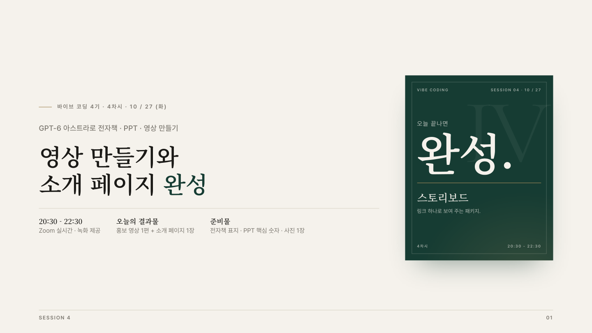

원본 PDF 1페이지
영상 만들기와 소개 페이지 완성
바이브 코딩 4 기 · 4 차시 · 1 0 / 2 7 ( 화)
GPT-6 아스트라로 전자책 · PPT · 영상 만들기 영상 만들기와 소개 페이지 완성
20:30 - 22:30 Zoom 실시간 · 녹화 제공
오늘의 결과물 홍보 영상 1편 + 소개 페이지 1장
준비물 전자책 표지 · PPT 핵심 숫자 · 사진 1장
IV
V I B E C O D I N G S E S S I O N 0 4 · 1 0 / 2 7
오늘 끝나면 완성.
스토리보드
링크 하나로 보여 주는 패키지.
4 차시 2 0 : 3 0 - 2 2 : 3 0
원본 표·카드·배치 확인
